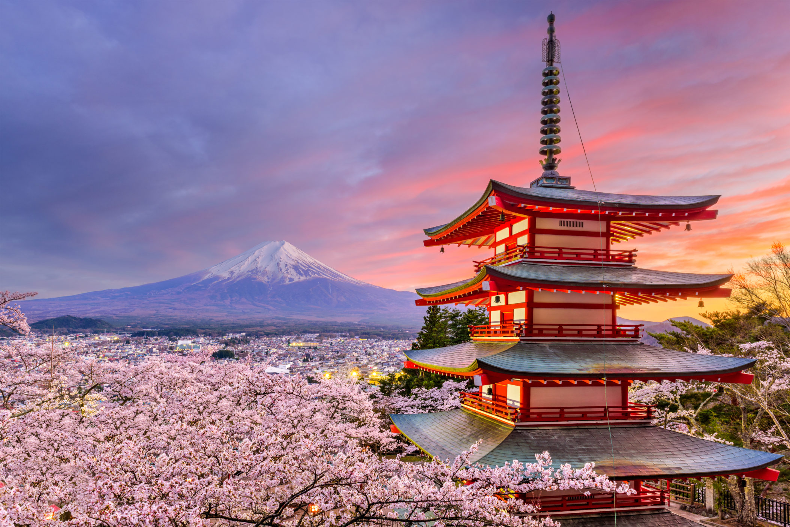
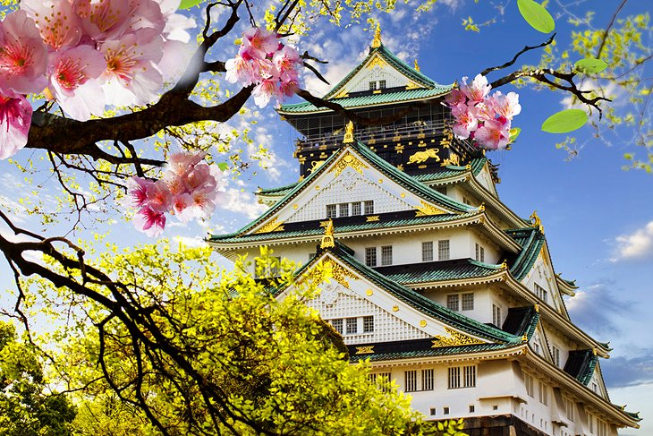
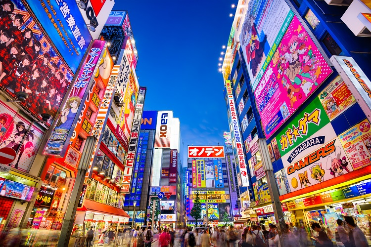
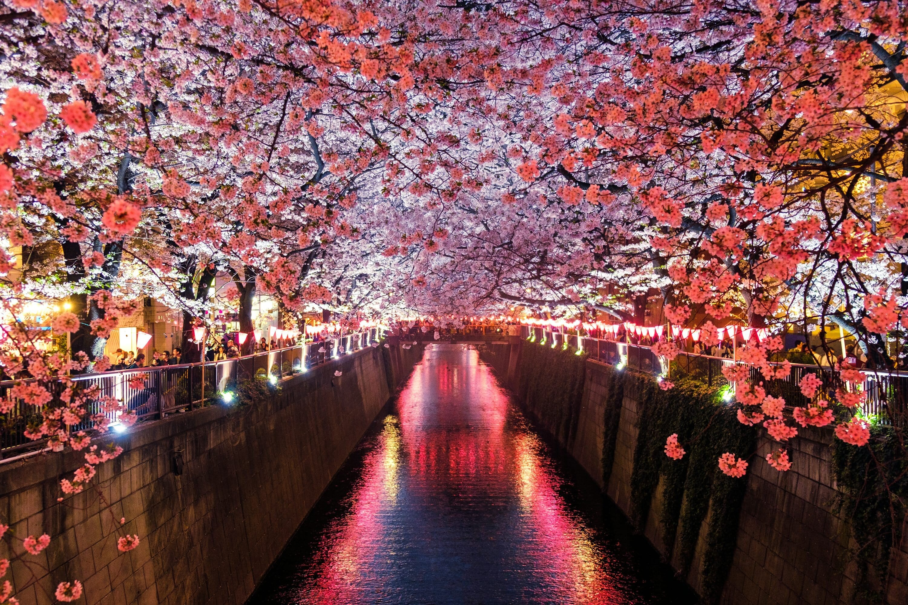
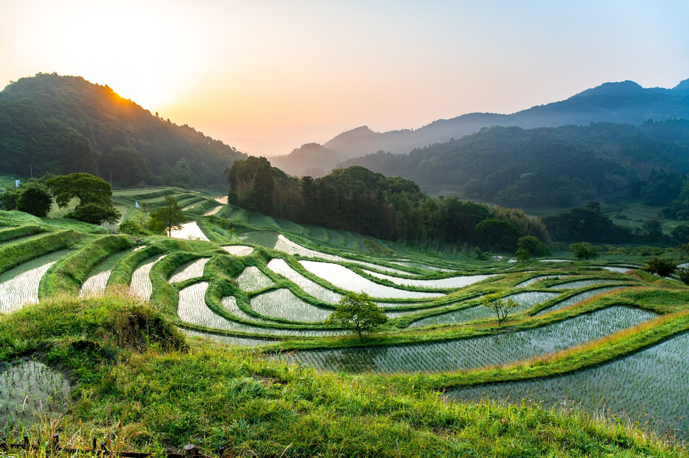
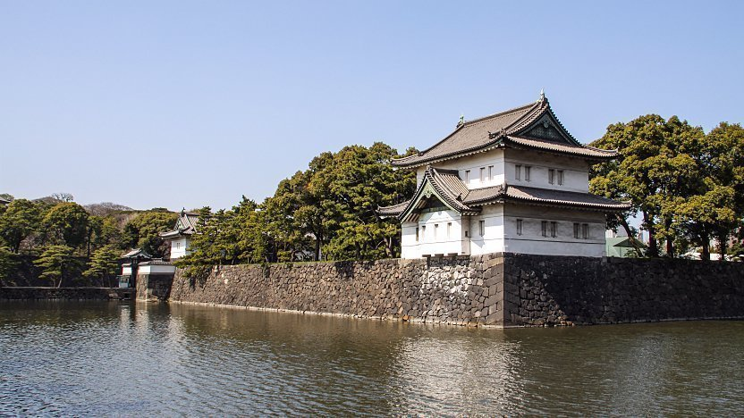

An island nation in East Asia, where ancient tradition meets modern technology.
Japan is made up of four main islands: Honshu, Hokkaido, Kyushu, and Shikoku. The country is known for its mountainous terrain, with Mount Fuji standing out as a prominent landmark. Japan boasts a rich cultural heritage, combining traditional arts and cuisine such as sushi and ramen with modern elements. Its history spans from ancient times through the era of the samurai to the rapid modernization that occurred during the Meiji Restoration. Today, Japan has the world's third-largest economy and is recognized for its advancements in technology and its major industries, including automobiles and electronics. With a population of around 125 million, Japan also faces challenges such as an aging population.
4
Main islands
125M
People
3rd
Largest economy
Fuji
Prominent landmark

It's a famous historical landmark known for its white exterior and golden roof. The castle is surrounded by beautiful cherry blossoms, which are often associated with Japan.

Akihabara, known as "Akiba," is a lively Tokyo district famous for electronics and anime. This area is a hub for unique subcultures, offering a colorful blend of modern technology and traditional Japanese entertainment.

A beautiful display of cherry blossoms along a canal in Japan. The pink blossoms are illuminated by lanterns, creating a magical and romantic atmosphere. This is a common sight during the cherry blossom season, which typically occurs in late March to early April.

Oyama Senmaida is a breathtaking landscape of terraced rice paddies located in the Chiba Prefecture of Japan. Renowned for its 1,000-step terraced fields, it's a testament to the ingenuity and hard work of Japanese farmers.
Shirakawago's historic village, Kerama Islands' pristine waters, and the majestic Imperial Palace.
A historical village famous for its traditional gassho-zukuri farmhouses, designed to withstand heavy snowfall. It's a UNESCO World Heritage site, known for its unique architectural style.
Located south of Okinawa, the islands are known for their beautiful coral reefs and clear blue waters, making them a haven for divers and beach lovers. They are also home to rare wildlife and vibrant marine ecosystems.

The primary residence of the Emperor of Japan. Surrounded by beautiful gardens, it stands as a symbol of Japan's monarchy and rich cultural heritage.